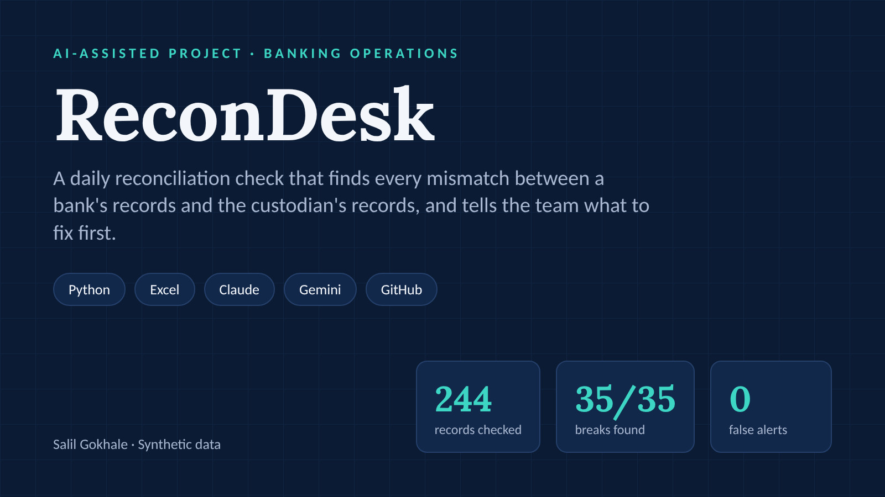
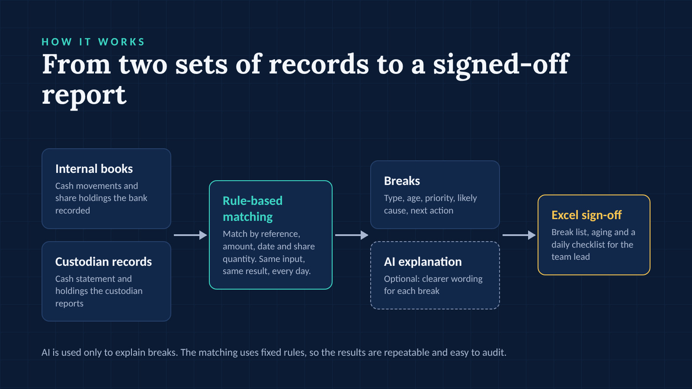
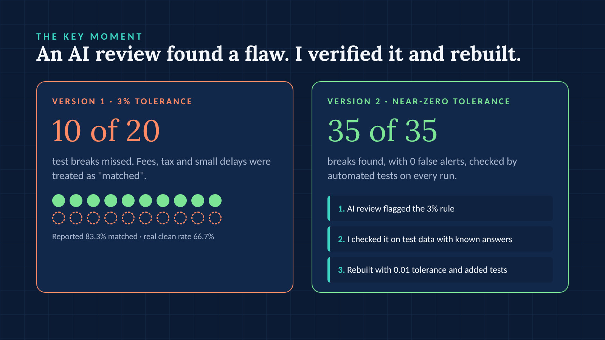
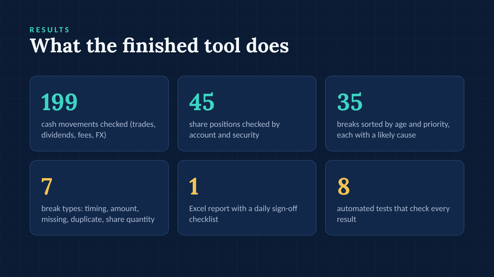
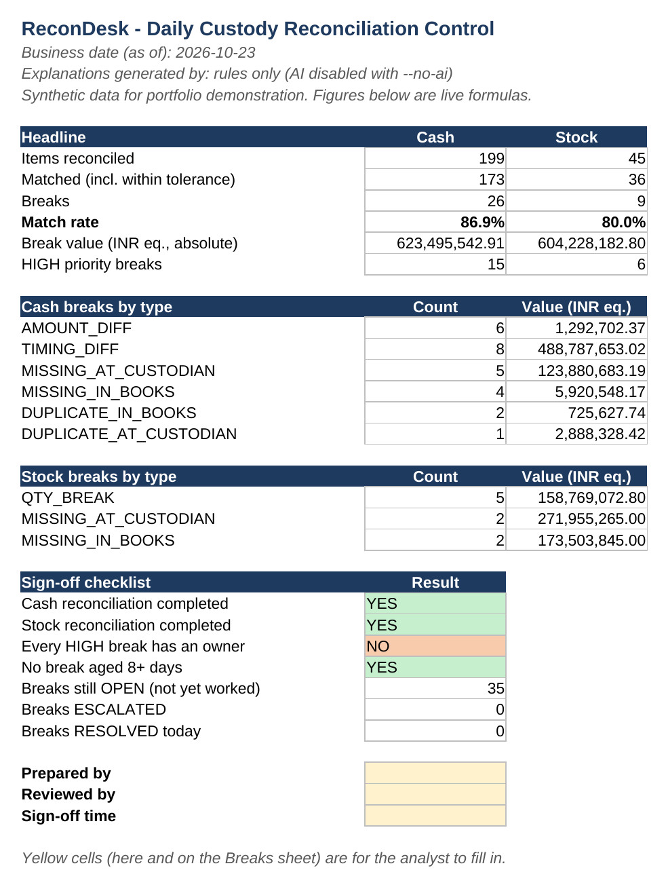

Me
Direction and testing
I started this project for the Razorpay AI Buildathon 2026 and decided what the tool had to check. I tested every result before accepting it.
AI-Assisted Project · Banking Operations
A daily reconciliation check that finds every mismatch between a bank's records and the custodian's records, and tells the team what to fix first.

The problem
Banks compare their internal records with the custodian's records every day. Any mismatch, called a "break", can mean missing money or a wrong client report.
Checking thousands of lines by hand is slow and easy to get wrong.
My role and the AI's role
Me
I started this project for the Razorpay AI Buildathon 2026 and decided what the tool had to check. I tested every result before accepting it.
AI (Gemini, then Claude)
Wrote and extended the code, and reviewed it against how custody operations teams actually work.
How it works
AI is used only to explain breaks. The matching uses fixed rules, so the results are repeatable and easy to audit.

The key moment
An AI review of my first version flagged that it allowed a 3% difference before calling something a break. That sounded small.
I checked it on my test data, where I knew the right answers: 10 of the 20 test breaks were being marked as "matched". Fees, tax deductions and short delays were hidden.
I rebuilt it with a near-zero tolerance (0.01, only for rounding) and added automated tests so the problem can't come back.
Version 1 · 3% tolerance
83.3%
reported match rate, while the real clean rate was 66.7%
Version 2 · near-zero tolerance
35 of 35
breaks found, with 0 false alerts

How I made sure it works
The test data contains 35 breaks that were added on purpose, with a list of each one.
Automated tests confirm that all 35 are found, with the right type and cause, and 0 false alerts.
Result


What I learned
Tools